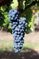
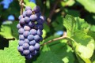

Культуру виноделия французам навязали римляне в VI веке до нашей эры. Огнем и мечом они заставляли непокорных галлов сажать лозу. Спустя 500 лет те же римляне уничтожили все виноградники Галлии, ставшие угрозой имперской торговле. Но любовь местных жителей к благоро
Франция — родина винограда разных сортов, таких как Каберне Совиньон, Шардоне, Совиньон Блан и Сира, которые культивируются в настоящее время по всему миру, кроме того именно во Франции появились такие важные ключевые понятия, как «терруар» и «апелласьон», зародились многие винодельческие традиции, распространившиеся с течением времени по другим странам и континентам. Французское виноделие признано во всем мире, это не только важная статья экспорта, но и предмет национальной гордости, практически объект культа.
Мерло(Merlot)-французский технический сорт винограда, распространен на побережье Средиземного моря, в Алжире, на юге России.Урожай винограда используют для приготовления высококачественных столовых и десертных вин, а также в купаже для улучшения других красных вин и соков. Его крупные и тонкокожие ягоды дают, как правило, вина с меньшим содержанием танинов и более богатые, к тому же они созревают раньше других.
Каберне-совиньон(Cabernet Sauvignon)-Технический сорт винограда. Французский сорт, распространен в Бордо, его культивируют во многих странах мира - Болгарии, странах бывшей Югославии, Италии, Румынии, США, Аргентине, Японии. Синоним серьезного красного вина, способного, старея, обретать тонкость и благородство. Самый распространенный в мире сорт винограда. Вино с ароматами черной смородины, можжевельника, с высоким содержанием танинов.
Пино-нуар(Pinot noir)технический (винный) сорт винограда, используемый для производства вина. В переводе с французского название звучит как «чёрная шишка», поскольку небольшие плотные гроздья этого винограда по внешнему виду немного напоминают шишки. Термин «пино-нуар» также используется для обозначения типа сепажных вин, то есть вин, производимых из одного сорта винограда.
| Страна | Год 2014 | Год 2015 | Год 2016 | Год 2017 |
|---|---|---|---|---|
| Италия | Хороший | Средний | Плохой | Хороший |
| Франция | Хороший | Средний | Плохой | Хороший |
| Чили | Хороший | Средний | Плохой | Хороший |
| Россия | Хороший | Средний | Плохой | Хороший |